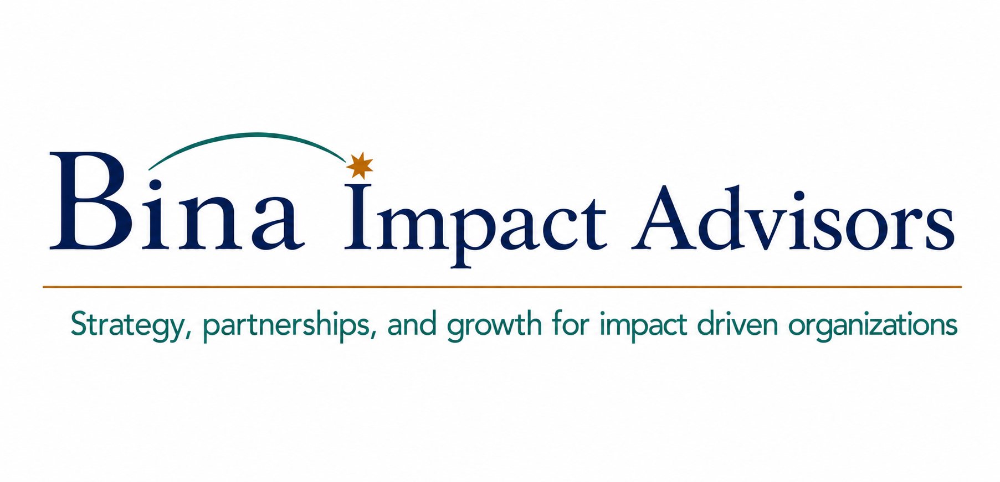
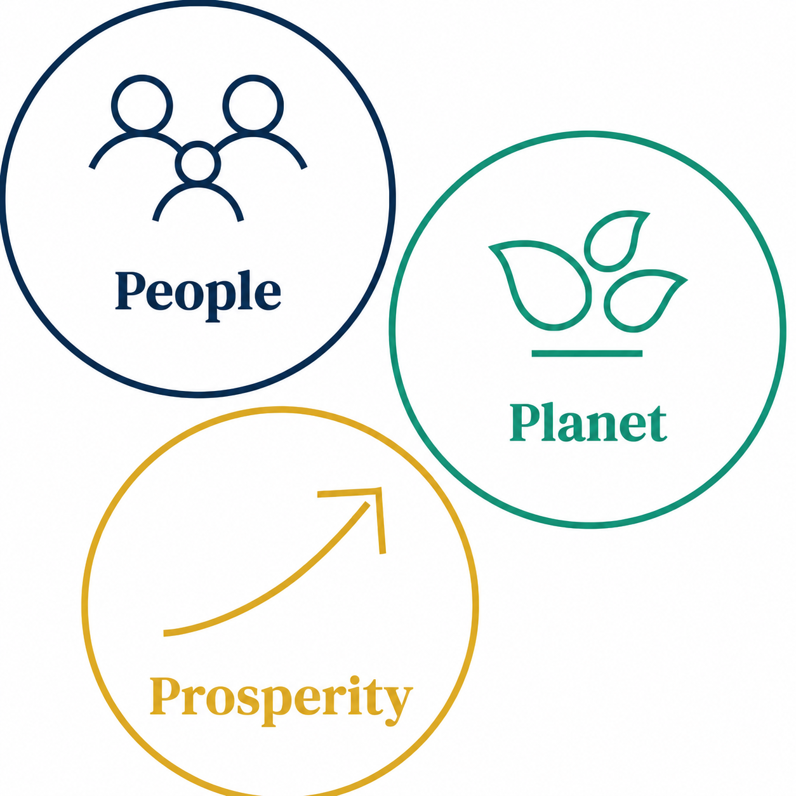
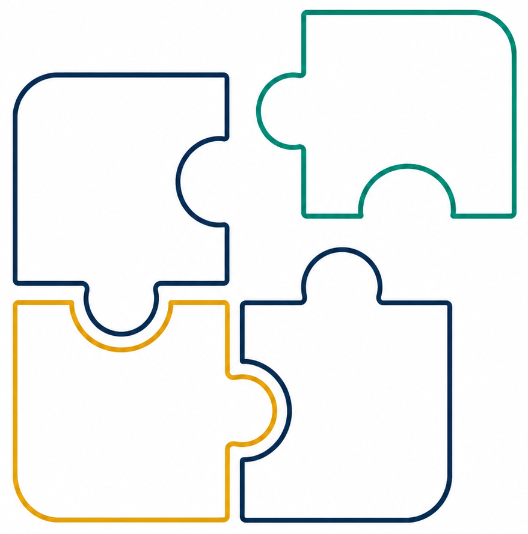
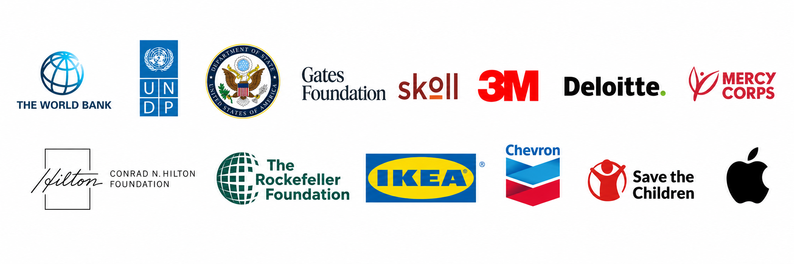

For corporations
Invest strategically in social and environmental good.
Strengthen your bottom line, elevate brand equity, secure supply networks, and meet emerging expectations with confidence.

Strategy that moves from intent to impact
Connecting corporate strategy to measurable social, environmental, and commercial results.
Who we serve
For corporations
Strengthen your bottom line, elevate brand equity, secure supply networks, and meet emerging expectations with confidence.
For NGOs & foundations
Develop high-value corporate and foundation relationships, unlock sustainable revenue streams, and diversify funding.
The modern impact imperative
Historically, corporate CSR was confined to writing checks for superficial public relations. Today, forward-thinking organizations need social investments aligned with core operations and supported by verifiable, data-driven outcomes. Bina Impact Advisors bridges the gap between organizational intent and execution.
Specialized client services
Tailored advisory support to accelerate impact, mitigate risk, and cultivate shared value.
We guide corporations through roadmapping, playbooking, and deploying impact strategies that advance commercial goals, community needs, supply-chain resilience, and employee engagement.

We identify, vet, and architect high-impact alliances across private, public, and philanthropic sectors—aligning contrasting interests to secure mutually reinforcing outcomes.

We help organizations select, integrate, and maintain credible standards aligned with sector requirements, operational capacity, investor expectations, and growth plans.
Proven trust

Founder & principal advisor
A social impact strategist with more than 25 years of executive leadership experience across 40+ countries.
Gina works alongside multinational companies, NGOs, and private foundations to translate corporate strategy into verifiable social, environmental, and commercial results. She began her career at Deloitte and directed large-scale initiatives for the World Bank, United Nations, and United States Government.
Her leadership includes establishing Pact's corporate ESG practice, spearheading partnerships and business acceleration at MEDA, and overseeing a $100 million international development portfolio at SUNY. She teaches corporate impact strategy and NGO management at American University and SUNY, and holds an MBA, a BA in Economics, and an AI for Business Certification.
Work with Bina
Bina Impact Advisors welcomes experienced independent professionals and mission-aligned organizations interested in collaborating on ambitious, measurable impact initiatives.
For independent professionals
Bring specialized sector, regional, or technical expertise to client engagements where your experience can make a meaningful difference.
For organizations
Partner with Bina to pursue opportunities, expand capabilities, assemble strong teams, and deliver complementary value to clients and communities.
We value diverse geographic, sector, and professional perspectives.
Start a conversation
Ready to align commercial objectives with data-backed, measurable impact? Coordinate a discovery call and begin mapping your strategic trajectory.